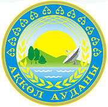

БАСТЫ БЕТ

АЛҒЫ
СӨЗ
Ұсынылып отырған кітапшада оқу бағдарламасына сай 8-сынып геометрия
курсының негізгі мазмұны берілген. Барлығы 4-тарау, соның ішінде 27 параграф
қамтылған. Әр тақырыпқа
анықтамалар, теоремалар (дәлелсіз), формулалар және оларды есеп шығаруда
қолдану үшін дидактикалық материалдар берілген.
Қазіргі уақытта геометрия сабағындағы қиындықтардың бірі - есептің сызбасын салу. Сызба салу сабақ уақытының басым бөлігін алады. Ал осындай дайын
сызбалар арқылы есеп шығару оқушыларға тақырыпты түсіну және бекітуге орасан зор
көмек береді, уақытты үнемдейді, есеп шығаруда жылдамдық артады және оқушылардың
сабаққа деген қызығушылығы оянады. Оқушылар тапсырмаларды орындау барысында
сызбада көрсетілген қайталана беретін анықтамалар, теоремалар, қасиеттерді көре
отырып оларды есте сақтайды.
Дайын сызбалар арқылы мұғалімнің жұмысы да жеңілдейді. Мұғалім әр
тақырыпқа өздік жұмыс ретінде немесе сабақты түсіндіру барысында бұл
дидактикалық материалдарды қолданса болады. Тапсырмалар саралап берілген
(оңайдан күрделіге қарай). Сондықтан да мұғалім әр оқушының қажеттілігіне қарай
тапсырмаларды таңдап, карточка түрінде тарата алады.
Қазіргі таңда білім беру мазмұны жаңарып, оқуға деген жаңаша көзқарас
пайда болды. Ақпараттық коммуникациялық технологияларын әр сабақта жиі
қолданудамыз. Осыған орай бұл дидактикалық материалдар арнайы құрастырылған сайтқа жарияланған. Әрбір
мұғалім өзінің сабағында қолдану немесе оқушының өз білімін жетілдіруге
мүмкіндігі бар.
Ұсынылып отырған бұл жұмыс қазіргі оқу мазмұнына, оқулықтардағы есептерді
ауыстыру мақсатында емес, тек сол
материалға қосымша көмек ретінде
берілген.